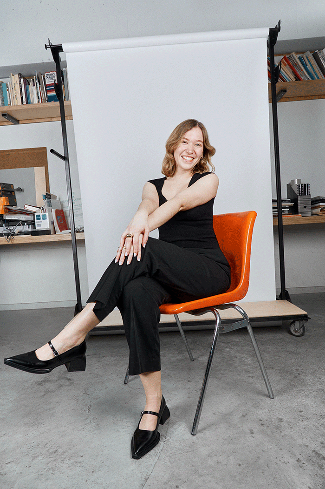

Finissante au baccalauréat en design graphique de l’École de design de l’UQAM, Chloé est une designer sensible qui explore la matérialité, la typographie et la narration visuelle. Sa pratique allie rigueur, intuition et poésie visuelle.
Basée à Montréal, Qc.
A recent graduate in Graphic Design from UQAM, Chloé is a sensitive designer exploring materiality, typography and visual storytelling. Her practice blends precision, intuition, and visual poetry.
Based in Montreal, Qc.
